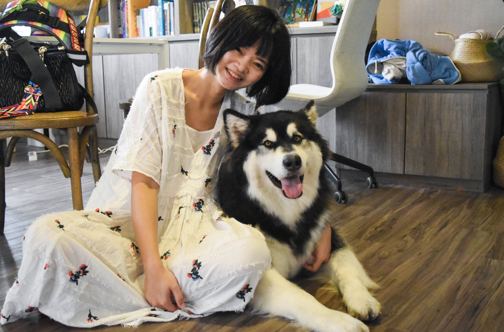

PETS × LIFESTYLE · DOCUMENTARY
Every bond
deserves to be remembered.
Natural light and honest connection. A collection of the unposed, tender moments shared by pets and the people who love them.
Explore the work
SELECTED WORK · 2019
A life together
A glimpse into a day of pet grooming.
More interested in each other than the camera.
BEHIND THE LENS
Hello, I'm Peggy.
Photographer and web designer. I love noticing the way light falls, and the trust and tenderness that emerge when people and animals are simply together.
View the full portfolio